Pulau Sumatera
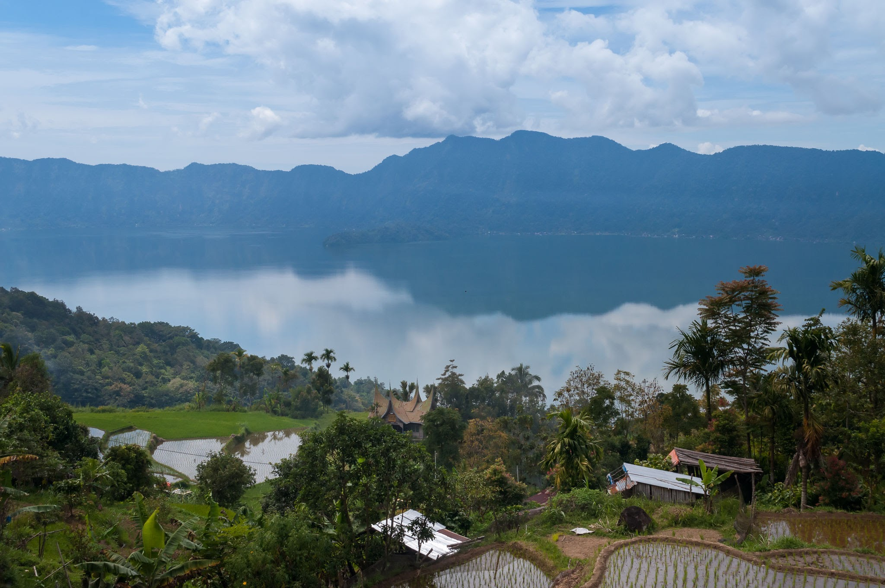
Danau Maninjau adalah sebuah danau di kecamatan Tanjung Raya, Kabupaten Agam, provinsi Sumatra Barat, Indonesia. Danau ini terletak sekitar 140 kilometer sebelah utara Kota Padang, ibu kota Sumatra Barat, 36 kilometer dari Bukittinggi, 27 kilometer dari Lubuk Basung, ibu kota Kabupaten Agam. Danau Maninjau merupakan danau vulkanik ini berada di ketinggian 461,50 meter di atas permukaan laut. Danau Maninjau merupakan sebuah kaldera dari letusan besar gunung api yang menghamburkan kurang lebih 220-250 km3 material piroklastik. Kaldera tersebut terbentuk karena letusan gunung api strato komposit yang berkembang di zona tektonik sistem Sesar Besar Sumatra yang bernama gunung Sitinjau (menurut legenda setempat), hal ini dapat terlihat dari bentuk bukit sekeliling danau yang menyerupai seperti dinding. Kaldera Maninjau (34,5 km x 12 km) ditempati oleh sebuah danau yang berukuran 8 km x 16,5 km (132 km2). Dinding kaldera Maninjau mempunyai 459 m dari permukaan danau yang mempunyai kedalaman mencapai 157 m (Verbeek, 1883 dalam Pribadi, A. dkk., 2007).
Lihat Selengkapnya
Pulau Kalimantan
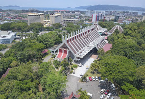
Museum Sabah adalah museum yang terdapat di negara bagian Sabah, Malaysia. Ia terletak pada 17 hektar tanah di Bukit Istana Lama di Kota Kinabalu. Di dalam kawasan kompleks ini juga terdapat taman etnobotani, kebun binatang dan sebuah desa warisan. Bangunan utama menempatkan galeri seni. Terdapat juga galeri lain yang menempatkan tentang peradaban Islam, arkeologi dan sejarah. Misi utama museum ini ditubuhkan adalah untuk mengumpul, memelihara dan memulihara dokumen etnografi, arkeologi, sejarah, numismatik, seni-sejarah, botani, koleksi zoologi dan mineralogi dari seluruh negara bagian, dan bagi menjalankan penelitian tentang pentingnya bagi mengetahui sejarah negara bagian ini, budaya, dan sejarah sosial. Museum Sabah sebelum ini telah ditubuhkan pada tahun 1965 pada rumah kedai di Gaya Street, Kota Kinabalu, sebagian besarnya datang dari usaha Persatuan Sabah. George Cathcart Woolley telah mengumpul koleksi gambar, diari dan artifak lain dan mewariskannya kepada pemerintah negara bagian Sabah untuk ditempatkan di museum ini. Kurator yang pertama di museum ini adalah E.J. Berwick. Pada tahun 1981, museum ini berada di bawah kuasa Kementerian Perkhidmatan Komuniti dan pada tahun 1982, ia berada di bawah kuasa Kementerian Kebudayaan, Belia dan Sukan. Museum itu dipindahkan ke sini pada tahun 1984.
Lihat Selengkapnya
Pulau Jawa
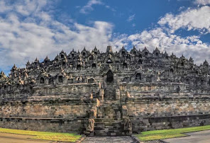
Borobudur adalah sebuah candi Buddha yang terletak di Borobudur, Magelang, Jawa Tengah, Indonesia. Candi ini terletak kurang lebih 100 km di sebelah barat daya Semarang, 86 km di sebelah barat Surakarta, dan 40 km di sebelah barat laut Yogyakarta. Candi berbentuk stupa ini didirikan oleh para penganut agama Buddha Mahayana sekitar tahun 800-an Masehi pada masa pemerintahan wangsa Syailendra. Borobudur adalah candi atau kuil Buddha terbesar di dunia, sekaligus salah satu monumen Buddha terbesar di dunia. Monumen ini terdiri atas enam teras berbentuk bujur sangkar yang di atasnya terdapat tiga pelataran melingkar, pada dindingnya dihiasi dengan 2.672 panel relief dan aslinya terdapat 504 arca Buddha. Borobudur memiliki koleksi relief Buddha terlengkap dan terbanyak di dunia. Stupa utama terbesar teletak di tengah sekaligus memahkotai bangunan ini, dikelilingi oleh tiga barisan melingkar 72 stupa berlubang yang di dalamnya terdapat arca Buddha tengah duduk bersila dalam posisi teratai sempurna dengan mudra (sikap tangan) Dharmachakra mudra (memutar roda dharma).
Lihat Selengkapnya
Pulau Sulawesi

Pulau Papua
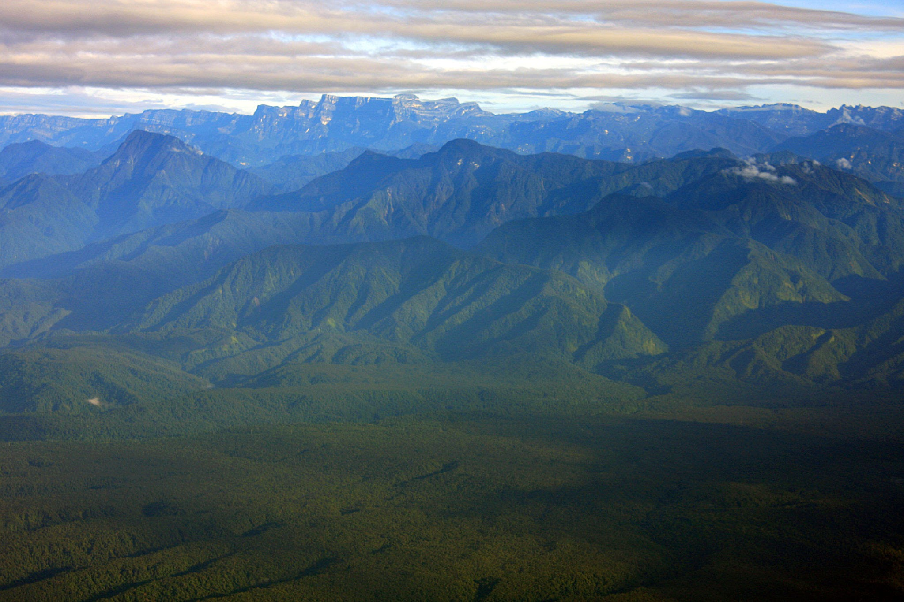
Taman Nasional Lorentz adalah sebuah taman nasional yang terletak di provinsi Papua, Indonesia. Dengan luas wilayah sebesar 2,4 juta Ha; Lorentz merupakan taman nasional terbesar di Asia Tenggara.Taman ini masih belum dipetakan, dijelajahi dan banyak terdapat tanaman asli, hewan dan budaya. Pada 1999 taman nasional ini diterima sebagai Situs Warisan Dunia UNESCO. Wilayahnya juga terdapat persediaan mineral, dan operasi pertambangan berskala besar juga aktif di sekitar taman nasional ini. Ada juga Proyek Konservasi Taman Nasional Lorentz yang terdiri dari sebuah inisiatif masyarakat untuk konservasi komunal dan ekologi warisan yang berada di sekitar Taman Nasional Loretz ini. Dari tahun 2003 hingga kini, WWF-Indonesia Region Sahul Papua sedang melakukan pemetaan wilayah adat dalam kawasan Taman Nasional Lorentz. Tahun 2003- 2006, WWF telah melakukan pemetaan di Wilayah Taman Nasional Lorentz yang berada di Distrik (Kecamatan) Kurima Kabupaten Yahukimo, dan Tahun 2006-2007 ini pemetaan dilakukan di Distrik Sawaerma Kabupaten Asmat.Nama Taman Nasional ini diambil dari seorang Penjelajah asal Belanda, Hendrikus Albertus Lorentz,yang melewati daerah tersebut pada tahun 1909 yang merupakan ekspedisinya yang ke-10 di Taman Nasional ini.
Lihat Selengkapnya
About Me

Perkenalakan namaku Novi Wahyuni, kebayakan orang memanggilku dan mengenal aku dengan nama Novi. Aku merupakan salah satu mahasiswa aktif di Politeknik Kampar dengan jurusan Teknik Informatika (D3) angkatan 2019. Lihat Selengkapnya
Popular Post
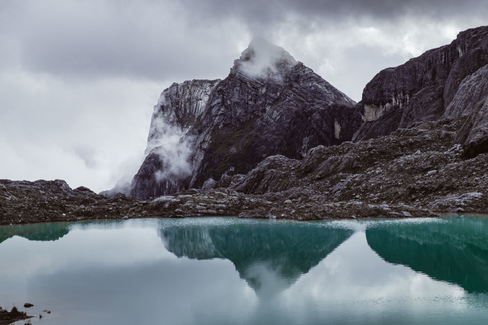
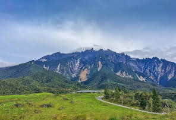
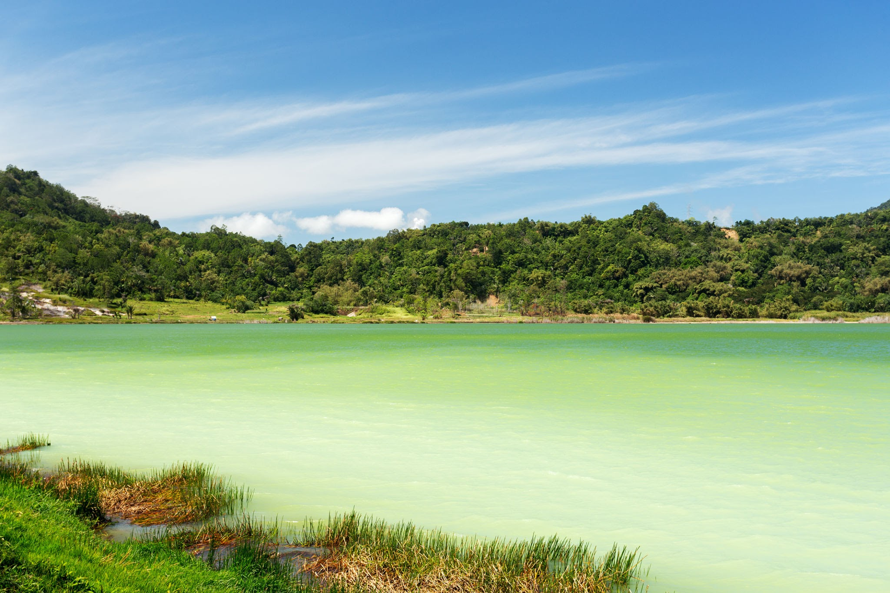
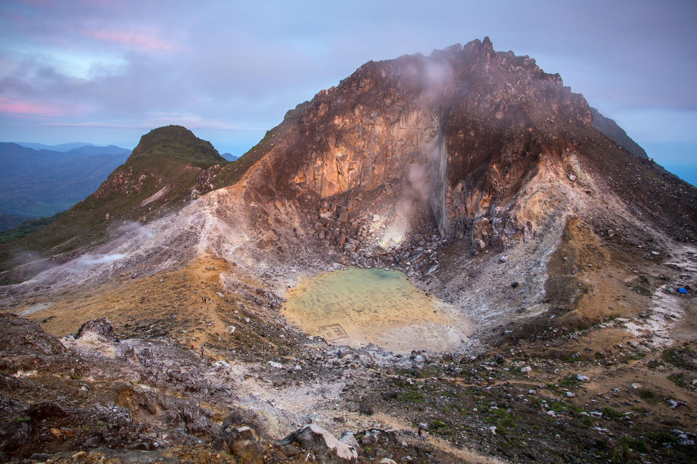
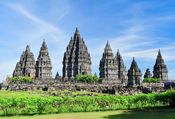
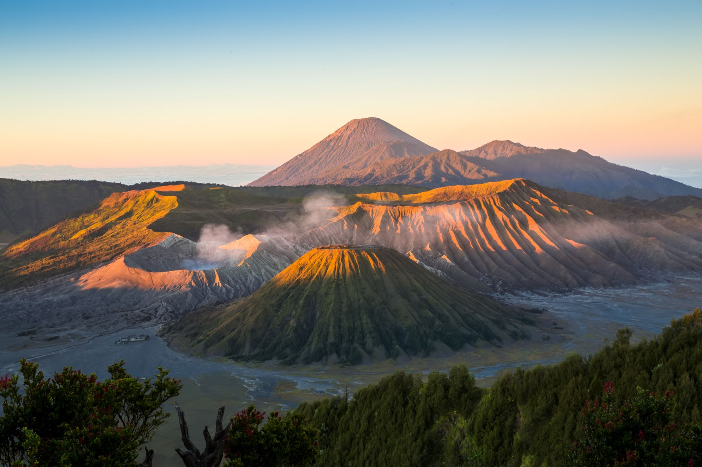
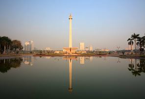
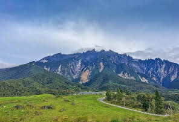
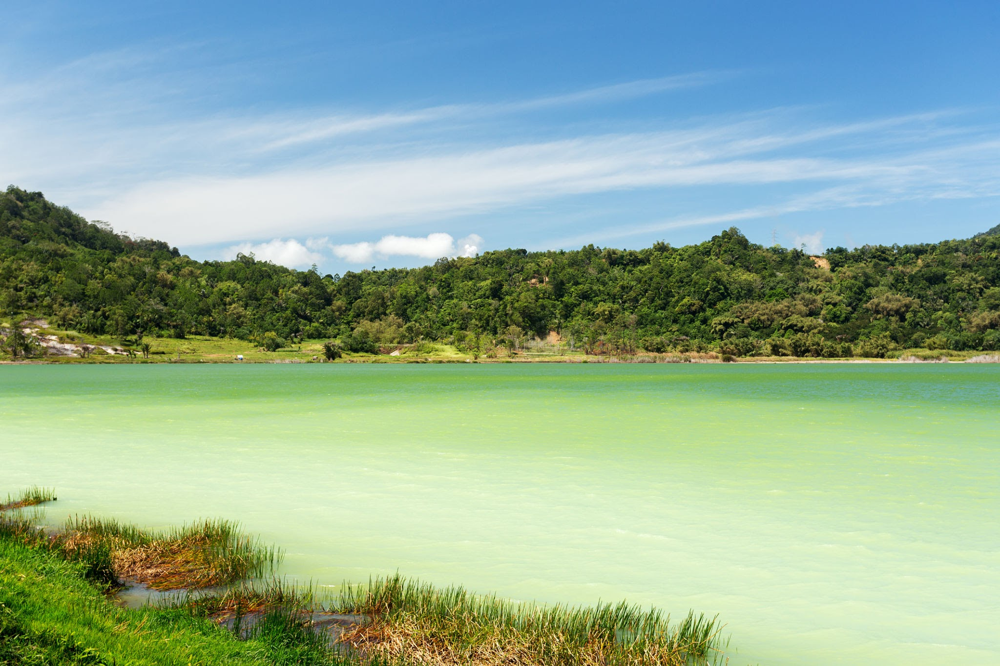
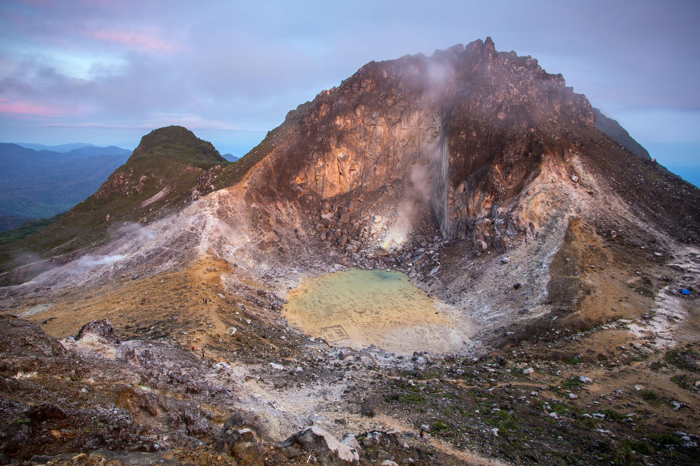
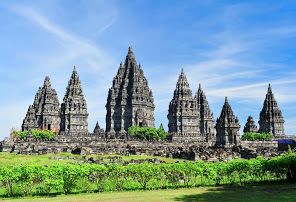
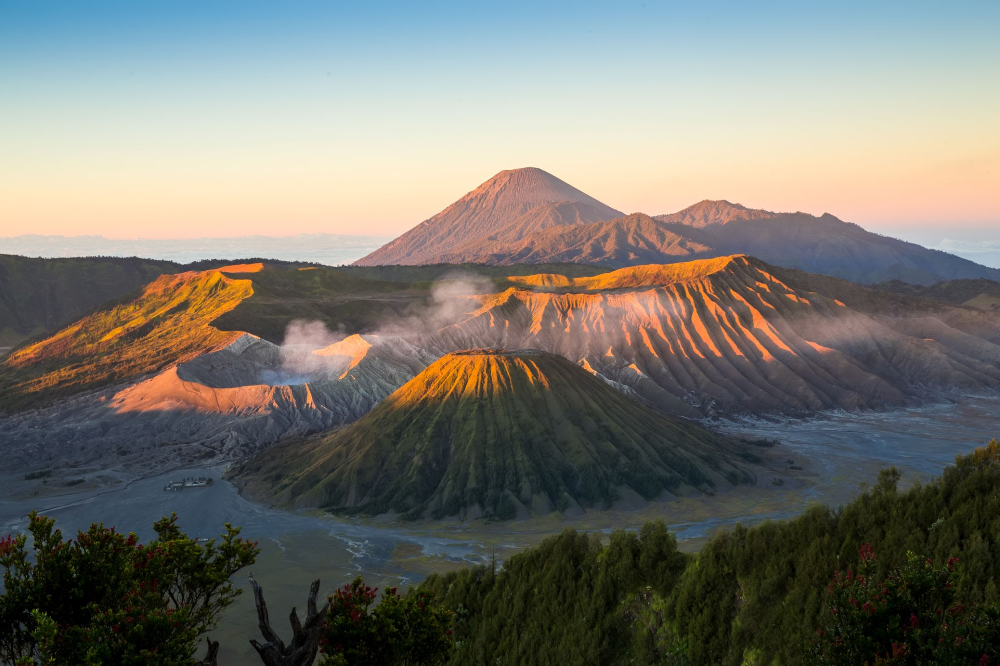
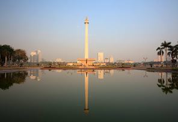